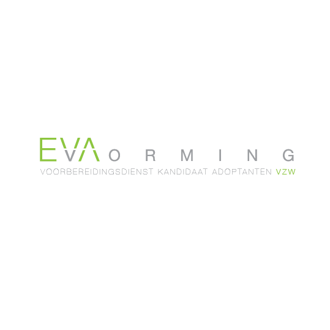
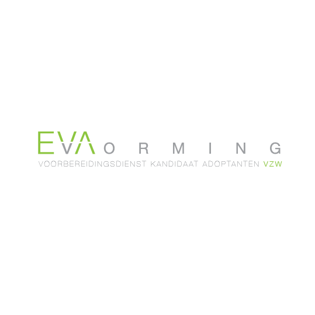

Naar de Portfolio pagina, waar je alles kan lezen en bekijken over wat ik allemaal heb gedaan en wat ik nog ga doen!
Naar de Contact pagina, waar je mij een e-mail kunt sturen, me kunt volgen op sociale media en meer!
Naar de About pagina, waar je alles kunt lezen over mij. Wat ik graag doe, wat is lees, wat ik game en meer!
Hier kan je van alles lezen over waar de site over gaat!
Deze website gaat over Rosiers Naomi (ik dus) en hier op deze site kan je me contacteren on de link ‘Contact’ daar kan je eveneens ook alles vinden op welke sociale media ik actief ben.
Onder de link ‘About’ kan je alles over me lezen wat ik interessant vind, wat mij hobby’s zijn en wat ik allemaal doe.
Je kan hier ook bekijken waar ik allemaal met bezig ben onder de link ‘Portfolio’, daar zal ik dingen posten die ik heb gemaakt of waar ik aan bezig ben.


 

Ik maak veel Grafische dingen, op school, voor andere mensen en vooral in mijn vrije tijd.
Ik heb veel schetsboeken thuis liggen waar ik in mijn schooltijd veel ingewerkt heb deze zijn meestal A4. Mijn andere schetsboeken waar ik vaak zelf in schets zijn over het algemeen altijd A5, die zijn handiger om mee te nemen en weg te steken.
Ik werk vaak gewoon met een 3B Derwent Potlood in mijn schetsboek en een zachte gom maar ik durf ook wel vaak te tekenen met een vulpotlood met gewone HB vullingen deze hoef je niet te slijpen en zijn handiger om mee te nemen.
Ook schilder ik wel eens. Soms op een grote katoenen doek die ik dan achteraf opspan op een zelf in elkaar getimmerde kader.
Ik schilder dan op die doeken of op gewone canvassen met Acryllverf en met varkenshaar borstels zowel zachte als harde.
Ik werk ook vaak met Aquarelle van Winsor Newton samen met kleurpotloden van Bruynseels om een mooi effect te krijgen.
Vroeger werkte ik ook vaak met houtskool (en houtskoolpotloden) en met pastellen maar dat droogden mijn handen enorm uit dus gebruik ik het niet meer zo vaak.
Ik heb een hekel aan het gebruik van Wasco’s en Ecoline verf. De Wasco’s zijn vettig en kan je moeilijk met kleuren terwijl de Ecoline enorm vast is en als je één pensteelstreek zet het voor altijd is ook al ga je erover.
Veel plezier op mijn website!
 Home
Home
 Portfolio
Portfolio About
About